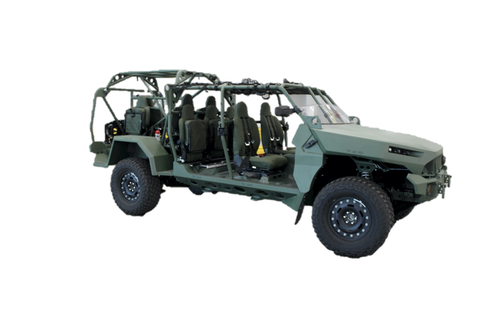
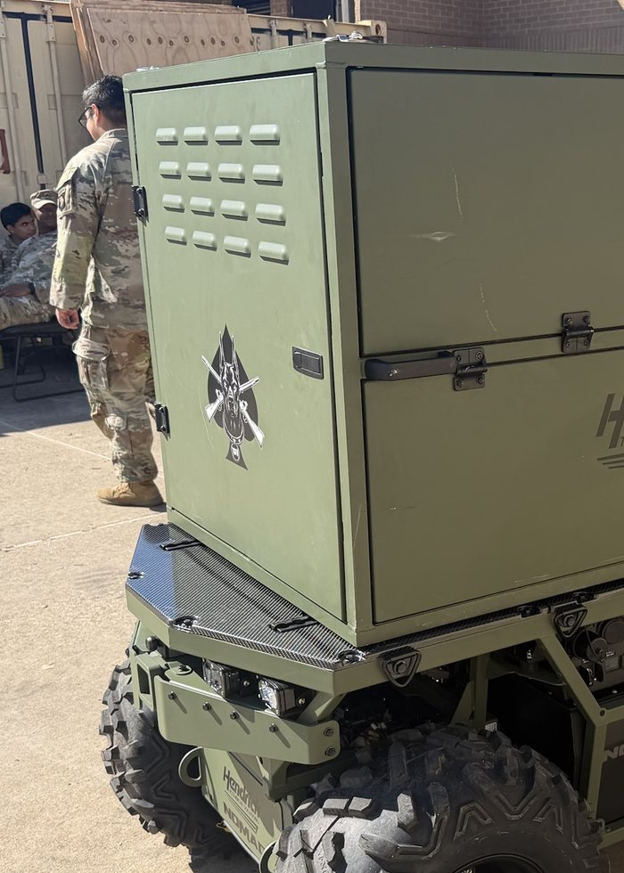

Seize the ground. Land the fuel. Turn the attack.
Mission: on order, an infantry company (minus) conducts air assault operations to seize a J-FARP to enable combat aviation assets to mass combat power in the Division deep area to defeat enemy forces and seize key terrain.
2× CH-47 · 1× UH-60 · NOMAD with the C2 package. One Chinook to Vulture, one to Owl, the Black Hawk to Falcon. Lands, seizes the three objectives.

2× CH-47 FATCOW / WETCOW · 18 PAX with the security squad and fuel handlers. The fuel lands on PZ Cedar.
2× AH-64. Refuel and rearm at the J-FARP, then continue 100–150 NM to the target.

Eighty-three soldiers, three jobs.
Own the approaches
DOG 6 lands LZ Owl and seizes OBJ Bernese. DOG 7 lands LZ Falcon and seizes OBJ Poodle with the mortars. Brings the NOMAD with the command and control kit.
Take the objective
DOG 26 lands LZ Vulture and seizes OBJ Husky, the northern apex. With the other two objectives held, PZ Cedar is secure no later than H+1:00.
Hold the fuel point
DOG 16 arrives with the fuel aircraft. Local security on the aircraft and refuel points, with the aviation battalion's fuel handlers alongside.



Equipment. Everything is dismounted. 1 NOMAD unmanned ground vehicle carrying the C2 package, 2 SKEDCO litters.
Lift options. Minimum 1 CH-47 + 1 UH-60 · COA 1: 2 CH-47 + 1 UH-60 · COA 2: 3 CH-47 + 1 UH-60.
Plan it backward from the objective.
Airborne and air assault doctrine builds five plans in reverse order. Each one constrains the next. For a FARP seizure the ground tactical plan starts with a question most air assaults never ask: can a Chinook full of fuel land here?
Staging plan
Who waits where, in what order.
Loading plan
What goes on which aircraft.
Air movement plan
Routes, timing, formation.
Landing plan
Which zone, what heading, what order.
Ground tactical plan
What happens on the objective.

IPC · AMCM · AMB
Initial planning conference, air mission coordination meeting, air mission brief. The aviation unit and the ground unit build one plan, not two.
Make the zones real
Select, mark and control landing and pickup zones, give inbound aircraft terminal guidance, and run the pickup zone when it is time to leave.
Cold loads and leader certs
Loading drills on the actual aircraft, leader certification and rehearsals buy down the risk of operating 180 miles from help.
Pick the ground the Chinook can land on, then plan everything else.
Key tasks: air assault planning and FARP site selection. The site has to satisfy three customers at once.
- The aircraft. Size and surface for a CH-47 with fuel aboard, approach and departure headings clear of trees, slope and dust acceptable at night.
- The target. Close enough for real station time, far enough that the fuel point is not on the objective.
- The defense. Few avenues of approach, cover for the perimeter, and a second site to jump to. Storm Surge plans three WETCOW sites across five locations.


The Chinook is the gas station.
Key tasks: FARP task force air assault (Lift 2), FARP establishment, deep attack air assault (Lift 3). Pathfinders run the zone.
- H+1:00. Lift 2 lands. The fuel Chinook and the task force Chinook arrive on the marked zone.
- Establish. Hoses out to two refuel points at the R3P. Echo company's handlers run the points; the security squad holds the zone.
- Lift 3 lands. Attack aircraft arrive on the points, fuel and arm with rotors turning.
- Turn forward. They depart for the target with a full tank. FARP operations complete by H+2:00.
Fly it at full distance before it counts.
Purpose. Validate a FARP seizure mission set that would be given to a Division pathfinder company, and prove the company's loading, command and control, enabler and FARP packages in an unfamiliar pickup zone.
- 185 NM with no refuel, using the extended range fuel system on the first serial.
- WETCOW extends attack aviation 60 NM beyond the objective.
- Three WETCOWs across five FARP locations, dispersed and secured at once, supporting more than one aircraft type.
- Hippo concept at 370 NM total, with sustainment and command nodes delivered by air, including an air-deliverable tactical command post.